갑좌기~
새해라서 영화를 한 편 보고 싶은데 봤던 것 중에서 보고 싶은 게 있었는데 뭔지 정말 아는 영화인데 제목도 생각이 안나고 심지어 감독 이름도 생각이 안 났다. 분명 누군지 아는데 이전작품 제목도 아는데 감독 이름이 생각이 안 나고 2번 본 영화인데 제목이 생각이 안 나니까…
아 이렇게 영화를 영영 못 찾는 날이 올까 싶었다.
물론 지금은 그럴 일이 없지만
이전작품이 유명 작품이니까 대충 치면 감독 이름도 찾을 수 있고 감독 이름을 찾으면 필모그래피를 훑으면 내가 찾는 영화 제목도 바로 찾을 수 있겠지만
그런데 진짜 아는 영화가 영영 기억이 안 나서 찾을 방법이 없어서 못 찾는 날이 올 수도 있으려나~ 싶었다.
그러면 어떻게 해야 하지..
그래서
외계인 만들어봄
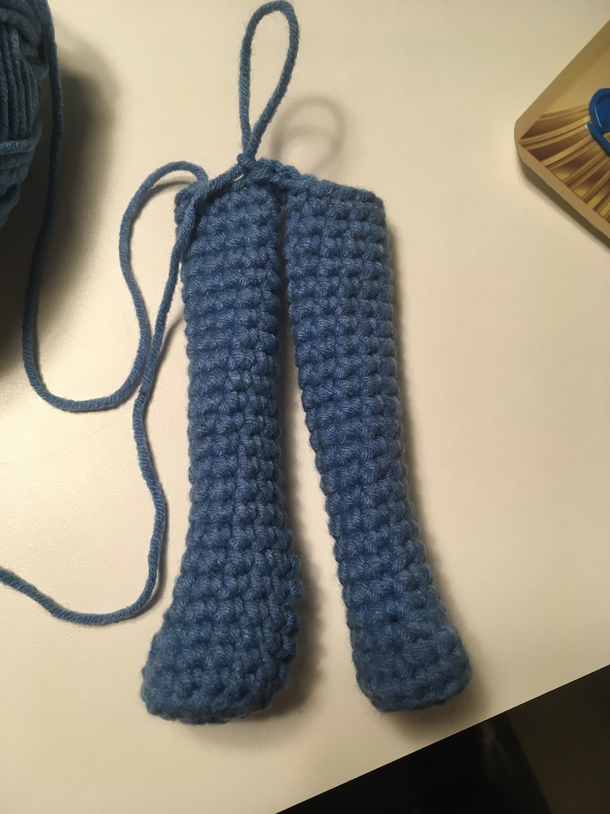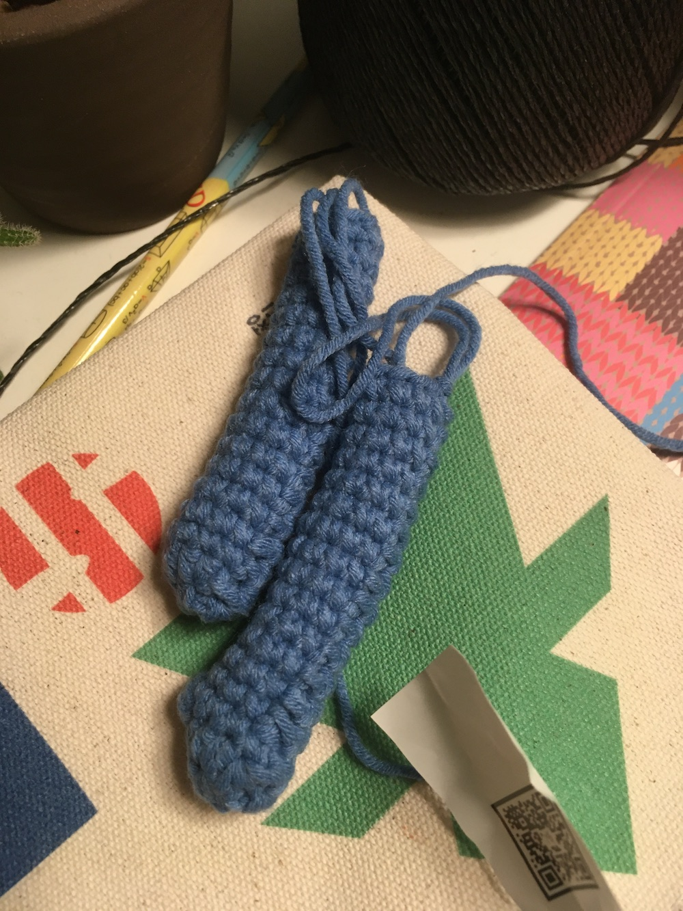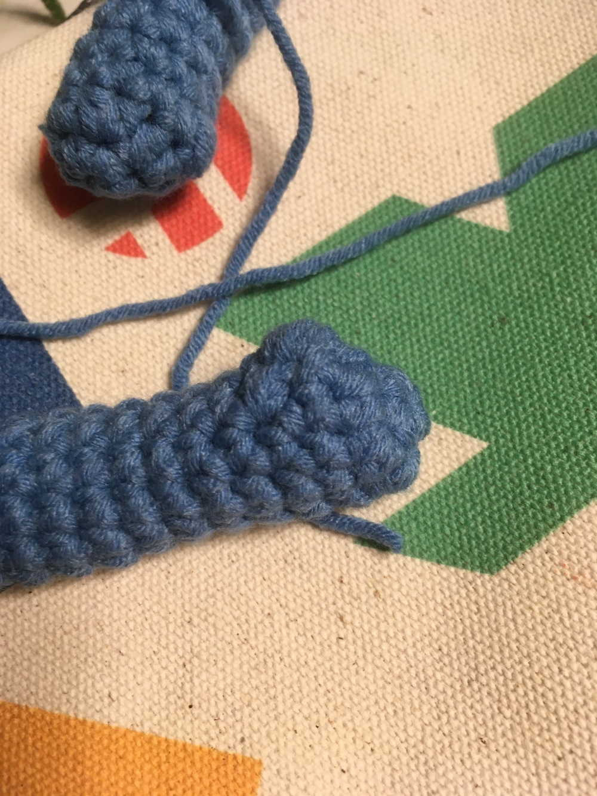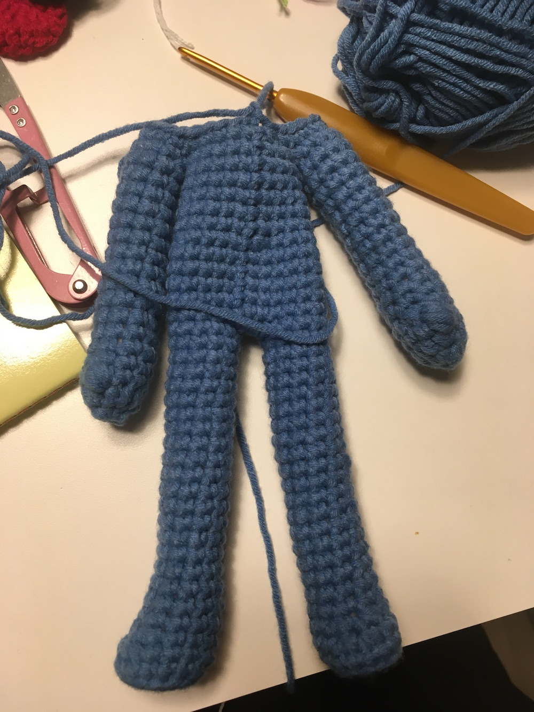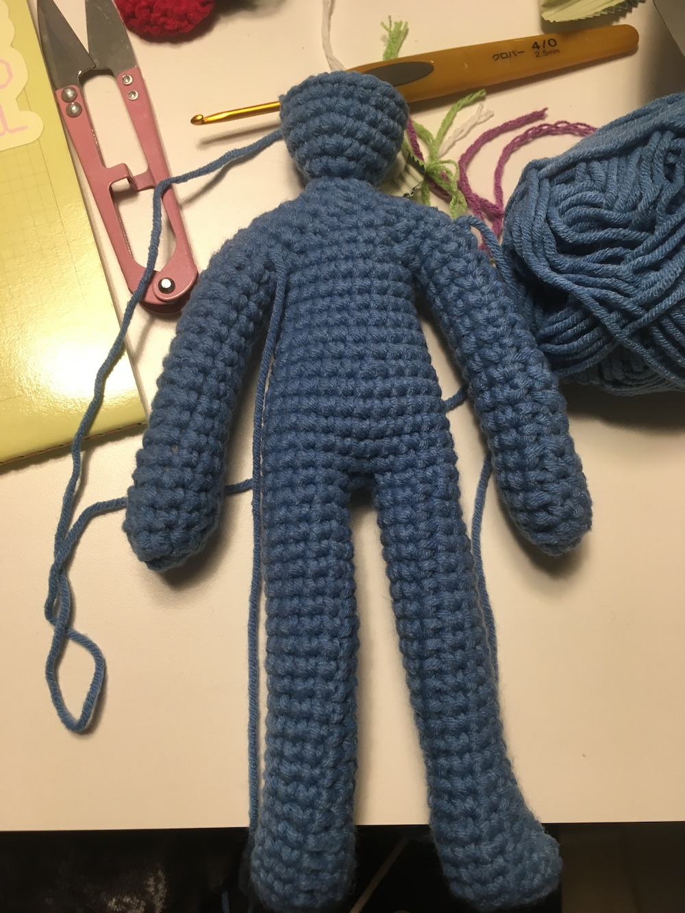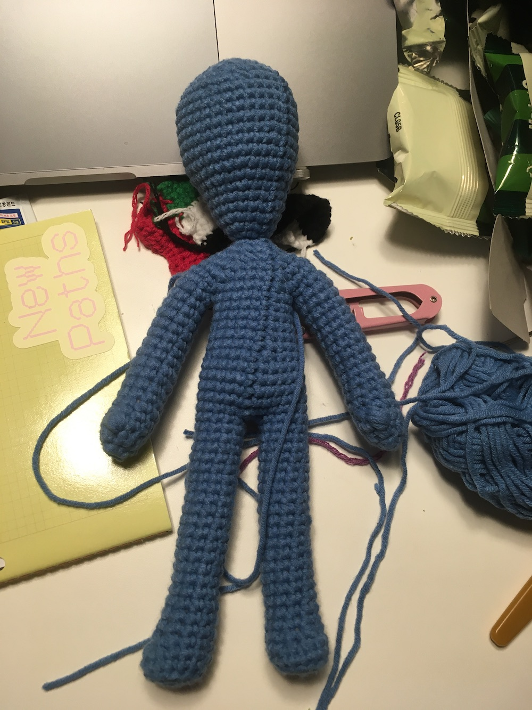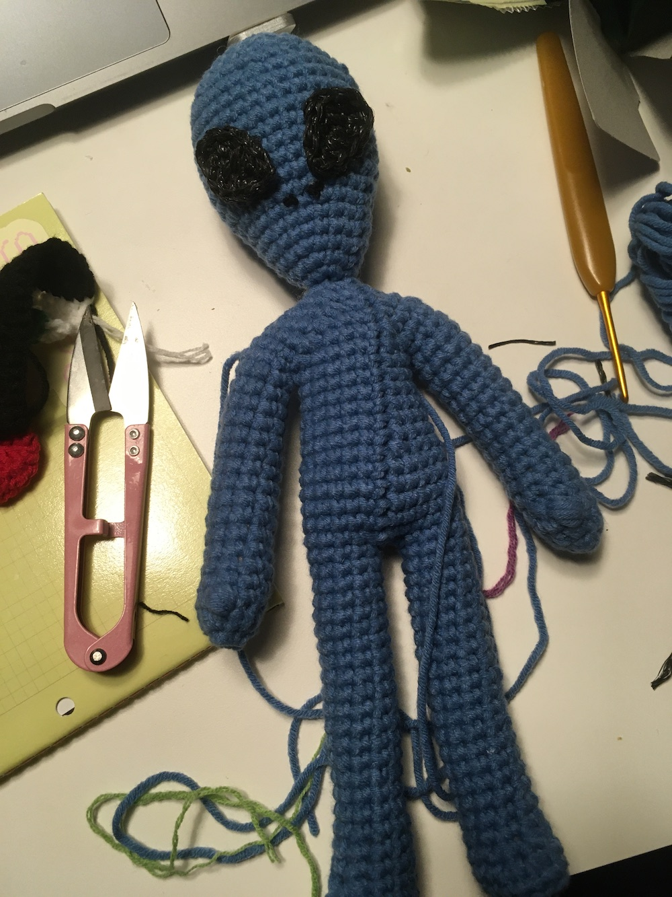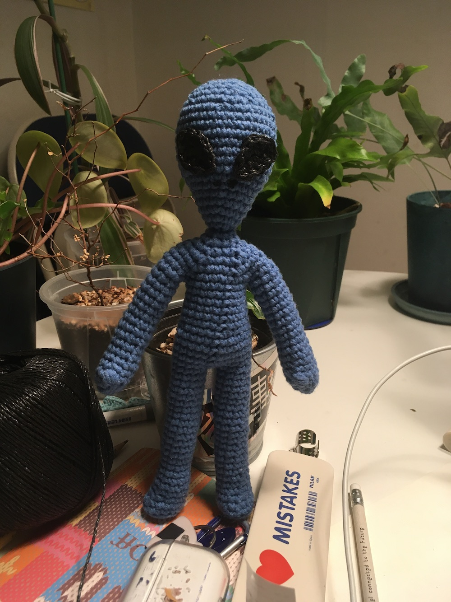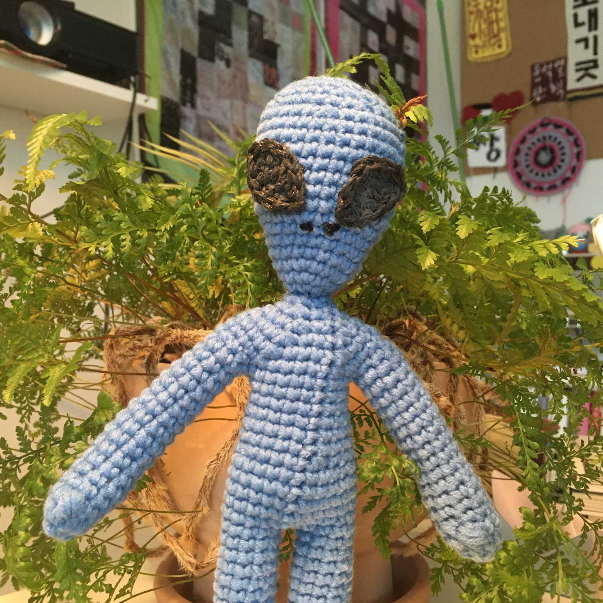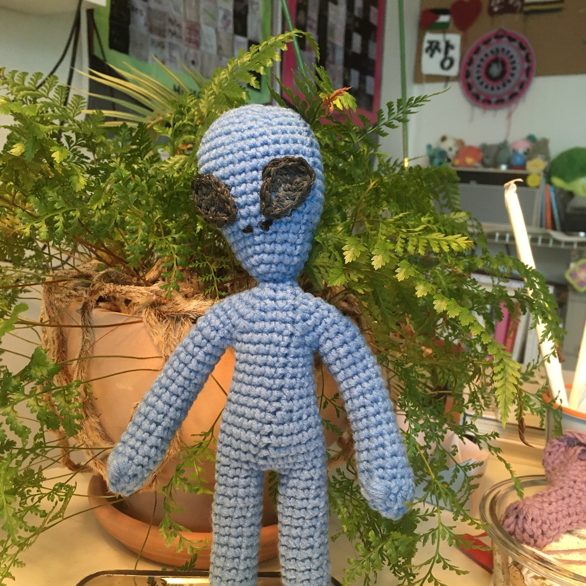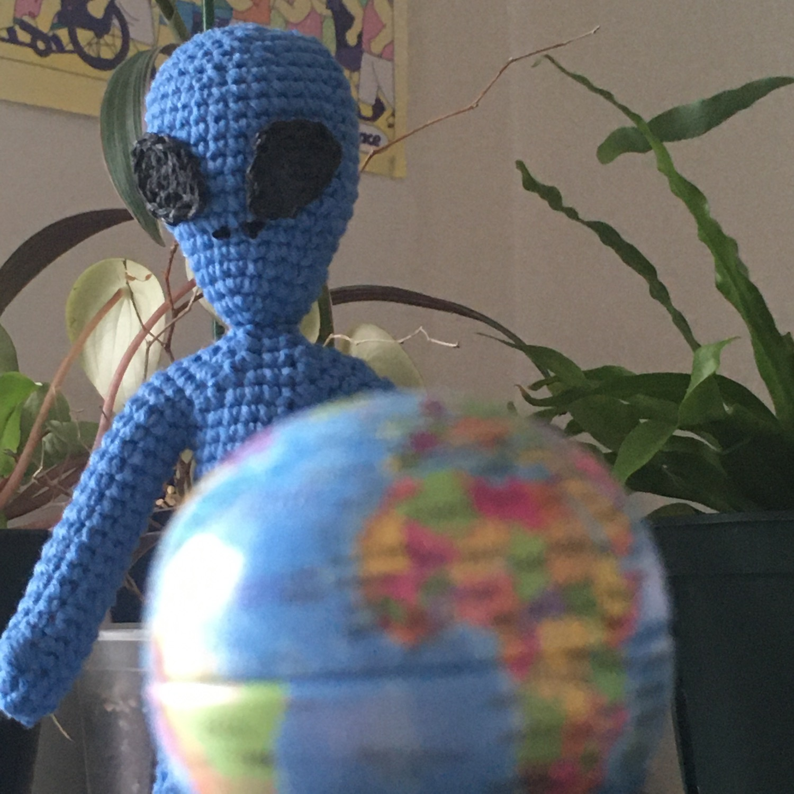 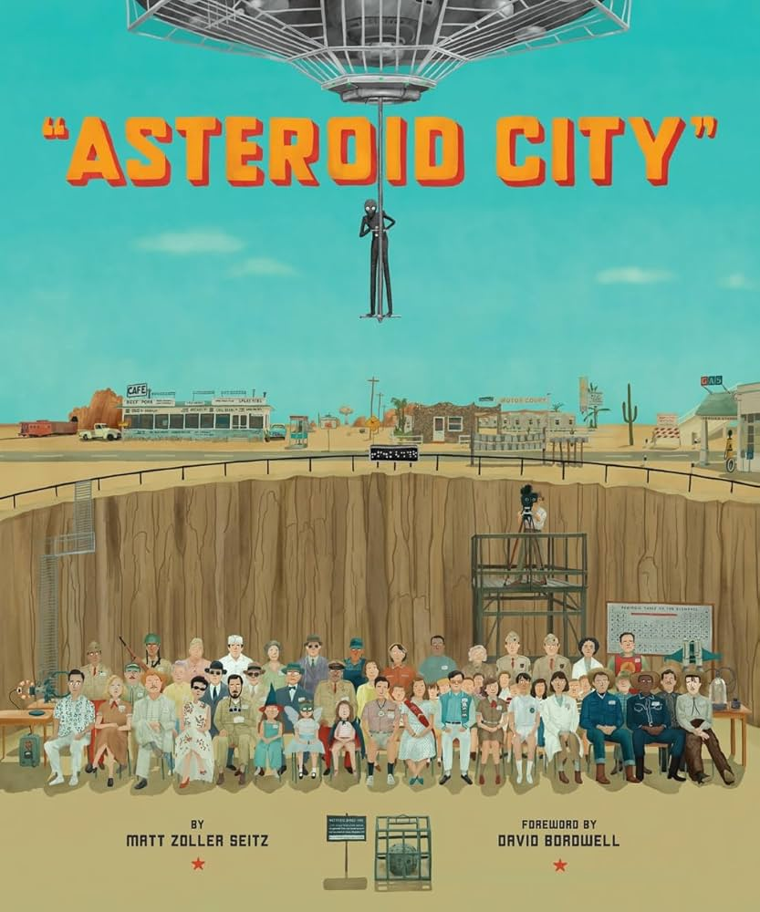Inspired by 〈Asteroid City〉 (Wes Anderson, 2023)
+
아래는 241119에 잊지마뻘소리 라고 적었던 것.. 뭔가 기억해야 한다는 것에 불안감을 느끼는 편인지..
외계인 만들게 된 동기를 떠올리다가 이런 생각을 했던 게 생각나서 덧붙인다..
+
잊지마 라는 말이 좋은 것 같다.
잊지 말라는 명령이 왠지 좋은 느낌을 준다.
왜일까나~..
잊지말라고 명령하는 게 시간에 대한 무서움 같기도 하고..
어떤 것이 진짜 기억에서 잊히지 않았으면 하는 마음이랑 너무 익숙해지지 말라는 마음이랑
그런 불안한 마음에서 하게 되는 협박이라서 그런가.. 불안에서 오는 고백에 나는 약한듯..
사실은 잊어도 어쩔 수가 없는데.. 잊지말라고 명령하면서 사실은 스스로 다짐하는 것이기도 하고..
이건 진짜 잊지마 왜냐묜 나도 잊으면 안되니까
근데 누가 잊어버려도 내가 안 잊으면 됨
근데 내가 잊어버리면 누가 기억해줄까 싶은 것도 있는데..
생각해보니 누가 나한테 잊지 말라고 명령해주길 바라는가 싶기도
나는 누구한테 잊지 말라고 명령 잘 못하겠네 생각해보니
다 잊어 버려도 내가 기억하면 그만
근데 내가 잊어 버리면 어디로 가는 거지 싶은 것들도 있긴 하지..
그건 그것대로 잊어 버리면 그만
결론은 흘러가는 대로~